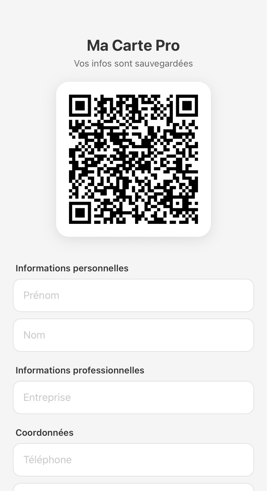
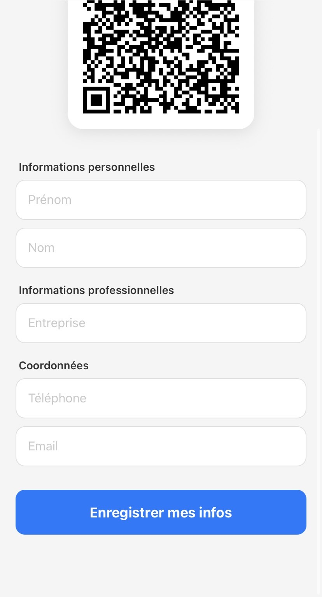
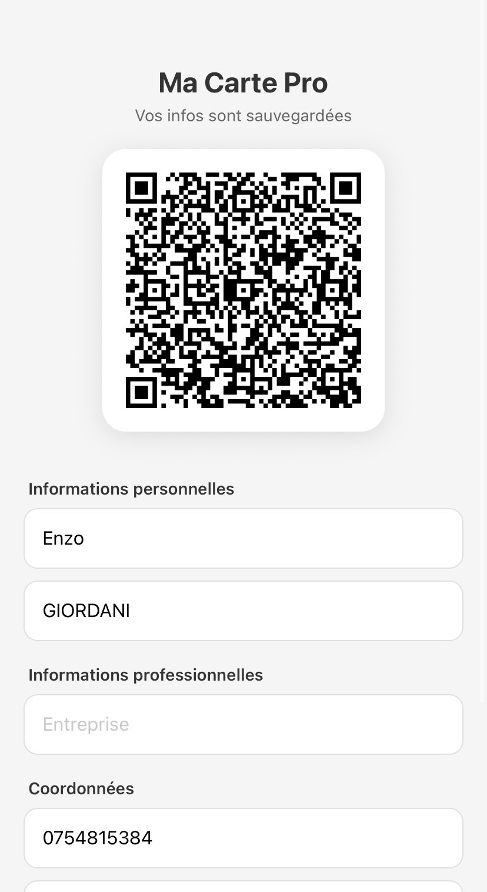
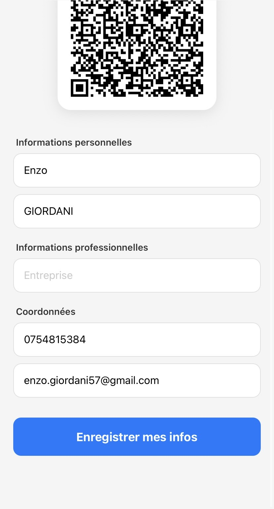

L'objectif était de concevoir une application mobile moderne et autonome permettant de remplacer les cartes de visite papier traditionnelles. L'utilisateur saisit ses coordonnées professionnelles une seule fois, l'application les stocke localement de manière sécurisée, et génère un QR Code dynamique instantanément lisible par tout smartphone.
AsyncStorage pour sauvegarder le profil directement sur le stockage interne de l'appareil.
Keyboard.dismiss(), feedback haptique et validation des champs en temps réel.
Exemple d'implémentation de la persistance asynchrone des données utilisateur :
// Sauvegarde asynchrone du profil utilisateur avec AsyncStorage
const saveData = async () => {
Keyboard.dismiss(); // Masque le clavier virtuel
try {
const profile = { prenom, nom, entreprise, telephone, email };
// Sérialisation et persistance locale
await AsyncStorage.setItem('userProfile', JSON.stringify(profile));
Alert.alert("Succès", "Vos coordonnées ont bien été enregistrées !");
} catch (error) {
Alert.alert("Erreur", "Impossible d'enregistrer vos informations.");
console.error("Storage error:", error);
}
};1. Au premier démarrage (Formulaire à compléter)


2. Données renseignées (QR Code généré en temps réel)

